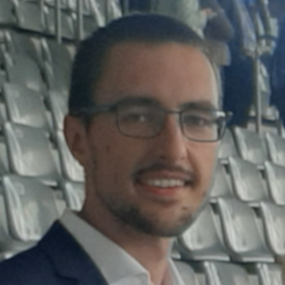

Research project
Nanoscale Imaging and Metrology

PhD research of Maximilian Lipp
The ever-increasing computational power and ever-shrinking size of electronic devices have been enabled by rapid developments in optical lithography and the micro-electronics industry. State-of-the-art processors require reliable and fast nanoscale engineering methods with high production efficiency. The widespread access to computational power has already made a big impact on our daily lives. New future applications like VR, AR or AI technologies require even smaller and more powerful hardware. However, keeping up with the aggressive reduction of the semiconductor device feature sizes is a challenging task.
In this project, we will explore deep learning and Bayesian optimization techniques to push the boundaries of compact semiconductor metrology tools. Label-free optical imaging methods with a spatial resolution beyond the Abbe diffraction limit and a temporal resolution beyond the Nyquist limit are being developed to characterize multi-layer nanostructures. Several modern research areas such as computational imaging and compressive sensing are connected with cutting-edge Machine Learning tools to develop new methods of nanoscale imaging and metrology for the semiconductor industry. The project is running in collaboration with Patrick Forré of AMLab and the Advanced Research Center for Nanolithography (ARCNL) and ASML, the world leader in the production of the lithography machines.